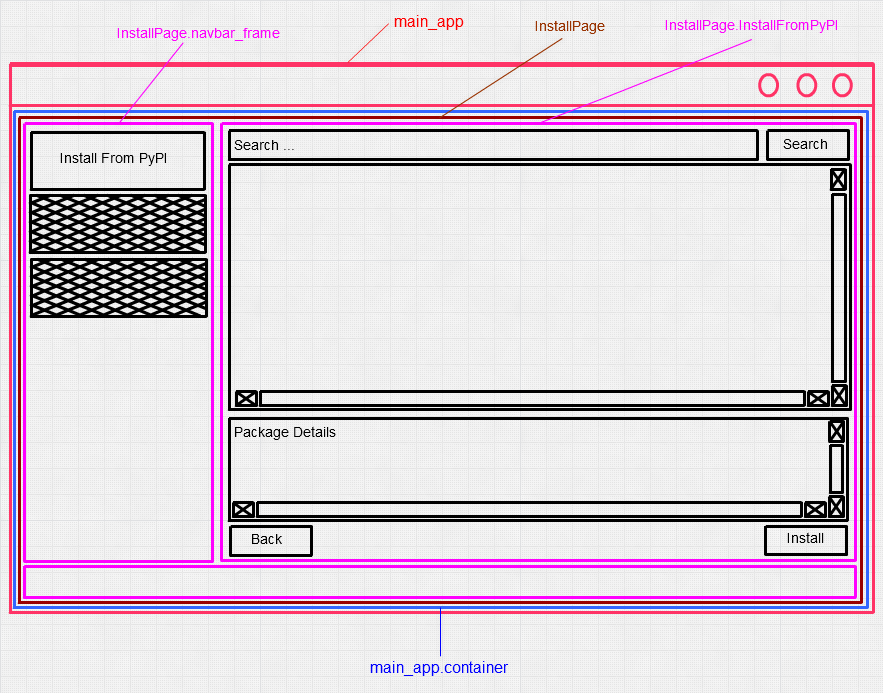

Install Page¶
It provides user options to install pip packages using different methods. Therefore, three most useful user tasks are implemented :
- Install From PyPI
- Install From Local Archive
- Install From Requirements File
The GUI options for switching betweeb these pages are provided as a set of buttons stacked vertically in a tkinter frame. Further options can be added easily by modifying manage_frame() method.
Install From PyPI Page¶
Main components of this page are :
- Search Bar
In order to maintain consistency in UI design the search bar is placed at top with a search button to it’s left. It has been ensured that the search bar functions in deafult way i.e. both actions clicking search button and pressing <Return> key with focus on tkinter Entry widget invoke the pip search command.
- Tree View
The treeview widget is used to show search results with four fields: - Module Name - Installed Version - Available Versions - Module Summary
Out of four fields, three fields are shown as row elements of treeview widget. On <Double Click>, detailed summary is shown in the below text widget. Here, again consistency is maintained as most other package managers or installation wizards with GUI function in similar way.
Install From Local Archive¶

It contains an tkinter entry widget with a Browse button. The Browse button invokes the standard file dialog selection menu. It has been ensured that file dialog shows archive files so that user can easily choose from small number of options.
Note
This page requires improvement as there is empty space available in frame.
Install From Requirements File¶
The page layout for the Install From Requirements File page is similar to Install From Local Archive Files.
Note
This page requires improvement as there is empty space available in frame.